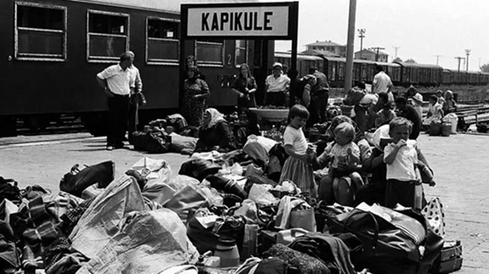
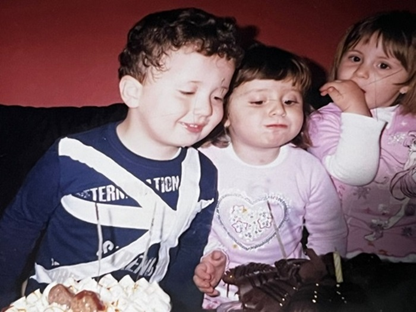

Merhabalar ben Bartu Dönmez 27/04/2004 tarihinde dünyaya geldim,
Dünyaya gözlerimi Kocaeli/İzmit'de açtım.
İnsanlar memleketimi sorduğunda, hem anne tarafı
hem baba tarafı Bulgaristan göçmeni olarak kendimi tanıtıyorum. Kendi ailemizin ataları yıllar
boyunca Balkan topraklarında Türk kimliğini sürdürmüştür.
1990 yıllarında hem anne hem baba tarafım
anadilimiz olarak konuştuğumuz Türkiye'ye göç etmiştir.
Anne tarafından dedemler hala Bulgaristan'da hayatlarına devam etmektedirler.
Fırsat buldukça yanlarına gidip yaşadıkları olayları, durumları dinlemeye çalışırım
ve kendi aile tarihimiz hakkında bilgi edinmeye uğraşırım.

Kendimden bahsetmek gerekirse bir tane ikiz kız kardeşim bulunmaktadır,
hayatımın büyük bir çoğunlukta bana destek olmaktadır.
İlkokul ve ortaokulu Şehit Selçuk Gökdağ Ortaokulun'da beraber okuduk.
Lise sınavından sonra yollarımız birbrimizden ayrıldı.
Ben eğitimime Ali Fuat Başgil Sosyal Bilimler Lisesin'de devam ettim
o ise Şehit Özcan Kan Fen Lİsesin'de eğitimine devam etti. Lise hayatımda güzel arkadaşlıklara
ve dostluklara sahibim ve hala da sürdürmekteyimdir. Üniversiteye geçiş yaptığımızda kendisi ile tekrar
yollarımız birleşti ve Sakarya Üniversitesi Bilgisayar Mühendisliği Fakültesin'de okuyoruz, kendisi üst
dönemim olmaktadır.

Okuduğum lise olan Ali Fuat Başgil Sosyal Bilimler Lisesinde'tam 5 yıllık bir eğitim gördüm ve ingilizce
olarak hazırlık sınıfı tamamladım, hayatımda bana kattığı güzel bir deneyimdi. Sınıfım hocalarımla güzel,
arkadaşlıklar ve yıllar sürecek dostluklar edindim ve kendileriyle hala iletişime devam etmekteyim.

Gündelik hayatımda arakdaşlarımla güzel manzaların fotoğraflarını çekmeyi o manzaralardan etrafı ve çevremizi
izlemeye bayılıyoruz. Fırsat bulduğumuz tüm vakitlerde, karar verip planlı veya plansız olarak güzel manzaralı
yerlere kendimizi atıyoruz. Doğa ve çevremiz mükemmel görüntülerle doludur,bir gün herkesin bu manzaraların
farkına varması ve keyfini çıkarmasını umuyorum.

Yukarıda fotoğrafını ve manzarasını eklediğim ve arkadaşlarımla sık sık gidip kafa dağıttımız yeşillikler içerisinde
olan Sekapark'a gitmek için aşağıda bir konum bulunmaktadır, ayriyetten yol tarifi alabilmek için
bağlantı linki koyuyorum.
buraya tıklayarak yol tarifi alabilirsiniz.